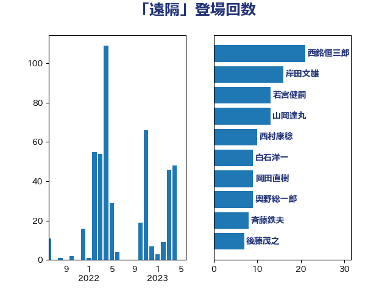

単語「遠隔」

| 西銘恒三郎 | 自由民主党 | 21 回 |
| 岸田文雄 | 自由民主党 | 16 回 |
| 若宮健嗣 | 自由民主党 | 13 回 |
| 山岡達丸 | 立憲民主党 | 13 回 |
| 西村康稔 | 自由民主党 | 10 回 |
| 白石洋一 | 立憲民主党 | 9 回 |
| 岡田直樹 | 自由民主党 | 9 回 |
| 奥野総一郎 | 立憲民主党 | 9 回 |
| 斉藤鉄夫 | 公明党 | 8 回 |
| 後藤茂之 | 自由民主党 | 7 回 |
| 芳賀道也 | 国民民主党 | 6 回 |
| 末松信介 | 自由民主党 | 6 回 |
| 加藤勝信 | 自由民主党 | 6 回 |
| 井出庸生 | 自由民主党 | 6 回 |
| 渡辺周 | 立憲民主党 | 5 回 |
| 斎藤洋明 | 自由民主党 | 5 回 |
| 大石あきこ | れいわ新選組 | 5 回 |
| 中西祐介 | 自由民主党 | 5 回 |
| 鬼木誠 | 立憲民主党 | 4 回 |
| 金城泰邦 | 公明党 | 4 回 |
| 輿水恵一 | 公明党 | 4 回 |
| 福重隆浩 | 公明党 | 4 回 |
| 木村英子 | れいわ新選組 | 4 回 |
| 星北斗 | 自由民主党 | 4 回 |
| 山岸一生 | 立憲民主党 | 4 回 |
| 音喜多駿 | 日本維新の会 | 3 回 |
| 池下卓 | 日本維新の会 | 3 回 |
| 横山信一 | 公明党 | 3 回 |
| 塩川鉄也 | 日本共産党 | 3 回 |
| 嘉田由紀子 | 無所属 | 3 回 |
| 倉林明子 | 日本共産党 | 3 回 |
| 今井絵理子 | 自由民主党 | 3 回 |
| 仁木博文 | 無所属 | 3 回 |
| 高橋千鶴子 | 日本共産党 | 2 回 |
| 長友慎治 | 国民民主党 | 2 回 |
| 里見隆治 | 公明党 | 2 回 |
| 萩生田光一 | 自由民主党 | 2 回 |
| 石原宏高 | 自由民主党 | 2 回 |
| 矢倉克夫 | 公明党 | 2 回 |
| 玄葉光一郎 | 立憲民主党 | 2 回 |
| 片山さつき | 自由民主党 | 2 回 |
| 熊谷裕人 | 立憲民主党 | 2 回 |
| 浅野哲 | 国民民主党 | 2 回 |
| 森田俊和 | 立憲民主党 | 2 回 |
| 木原稔 | 自由民主党 | 2 回 |
| 打越さく良 | 立憲民主党 | 2 回 |
| 山本博司 | 公明党 | 2 回 |
| 山本佐知子 | 自由民主党 | 2 回 |
| 国光あやの | 自由民主党 | 2 回 |
| 伊藤岳 | 日本共産党 | 2 回 |
| 井坂信彦 | 立憲民主党 | 2 回 |
| 中野洋昌 | 公明党 | 2 回 |
| 中山展宏 | 自由民主党 | 2 回 |
| 三上えり | 立憲民主党 | 2 回 |
| 齋藤健 | 自由民主党 | 1 回 |
| 高鳥修一 | 自由民主党 | 1 回 |
| 高階恵美子 | 自由民主党 | 1 回 |
| 高野光二郎 | 自由民主党 | 1 回 |
| 高橋光男 | 公明党 | 1 回 |
| 高木かおり | 日本維新の会 | 1 回 |
| 高市早苗 | 自由民主党 | 1 回 |
| 青山大人 | 立憲民主党 | 1 回 |
| 阿部司 | 日本維新の会 | 1 回 |
| 長谷川英晴 | 自由民主党 | 1 回 |
| 鈴木俊一 | 自由民主党 | 1 回 |
| 金子道仁 | 日本維新の会 | 1 回 |
| 野村哲郎 | 自由民主党 | 1 回 |
| 足立敏之 | 自由民主党 | 1 回 |
| 赤澤亮正 | 自由民主党 | 1 回 |
| 藤木眞也 | 自由民主党 | 1 回 |
| 藤川政人 | 自由民主党 | 1 回 |
| 藤岡隆雄 | 立憲民主党 | 1 回 |
| 葉梨康弘 | 自由民主党 | 1 回 |
| 菅家一郎 | 自由民主党 | 1 回 |
| 茂木敏充 | 自由民主党 | 1 回 |
| 若松謙維 | 公明党 | 1 回 |
| 羽田次郎 | 立憲民主党 | 1 回 |
| 緒方林太郎 | 無所属 | 1 回 |
| 笠井亮 | 日本共産党 | 1 回 |
| 窪田哲也 | 公明党 | 1 回 |
| 福田昭夫 | 立憲民主党 | 1 回 |
| 石原正敬 | 自由民主党 | 1 回 |
| 田村憲久 | 自由民主党 | 1 回 |
| 田村まみ | 国民民主党 | 1 回 |
| 田島麻衣子 | 立憲民主党 | 1 回 |
| 牧島かれん | 自由民主党 | 1 回 |
| 牧山ひろえ | 立憲民主党 | 1 回 |
| 滝沢求 | 自由民主党 | 1 回 |
| 湯原俊二 | 立憲民主党 | 1 回 |
| 渡辺猛之 | 自由民主党 | 1 回 |
| 渡辺博道 | 自由民主党 | 1 回 |
| 浜田聡 | NHK党 | 1 回 |
| 浜口誠 | 国民民主党 | 1 回 |
| 泉健太 | 立憲民主党 | 1 回 |
| 森屋隆 | 立憲民主党 | 1 回 |
| 柘植芳文 | 自由民主党 | 1 回 |
| 松本剛明 | 自由民主党 | 1 回 |
| 松山政司 | 自由民主党 | 1 回 |
| 東徹 | 日本維新の会 | 1 回 |
| 本田顕子 | 自由民主党 | 1 回 |
| 末次精一 | 立憲民主党 | 1 回 |
| 日下正喜 | 公明党 | 1 回 |
| 新垣邦男 | 立憲民主党 | 1 回 |
| 庄子賢一 | 公明党 | 1 回 |
| 岡本あき子 | 立憲民主党 | 1 回 |
| 山田勝彦 | 立憲民主党 | 1 回 |
| 山本香苗 | 公明党 | 1 回 |
| 山崎正恭 | 公明党 | 1 回 |
| 山口壯 | 自由民主党 | 1 回 |
| 小西洋之 | 立憲民主党 | 1 回 |
| 小山展弘 | 立憲民主党 | 1 回 |
| 寺田稔 | 自由民主党 | 1 回 |
| 大島敦 | 立憲民主党 | 1 回 |
| 大家敏志 | 自由民主党 | 1 回 |
| 大口善徳 | 公明党 | 1 回 |
| 堀場幸子 | 日本維新の会 | 1 回 |
| 城井崇 | 立憲民主党 | 1 回 |
| 吉田はるみ | 立憲民主党 | 1 回 |
| 北神圭朗 | 無所属 | 1 回 |
| 加藤竜祥 | 自由民主党 | 1 回 |
| 住吉寛紀 | 日本維新の会 | 1 回 |
| 伊東信久 | 日本維新の会 | 1 回 |
| 井上信治 | 自由民主党 | 1 回 |
| 上野賢一郎 | 自由民主党 | 1 回 |
| 三原じゅん子 | 自由民主党 | 1 回 |